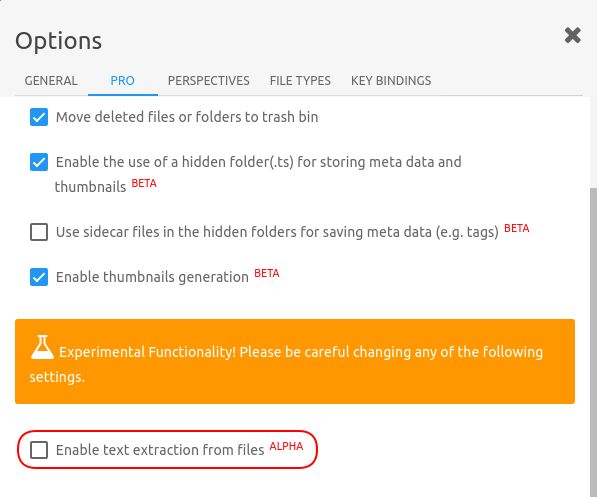

Search files
Search based on filenames
TagSpaces has a build in file search functionality. The difference to the classic Desktop Search software is the search is performed only in the currently opened location, since we for now do not index the files. The search has currently the following features:
- On the majority of file types the search considers only the file name for the search result. On some text based files such as txt, markdown or html the text content is also analysed, but this is still an experimental feature.
- It searches your sub-folders recursively by default. This could lead to performance issues on folders with many files and sub-folders. If you want the search to ignore the sub-folders, add
~character in front of your search query. The default search in the sub-folders can be disabled in the settings. Example: If you want the find files having the wordword1located in current folder, ignoring the sub-folders you have to enter~ word1in the search input box. - If you want to find all files tagged with a certain tag, you can add the
+character in front of the tag name. This way occurrences of this word somewhere else in the file name or content will be ignored. Example: If you want to find all files from the current folder tagged with the tagtag1you have to enter+tag1in the search input box. - The name of the parent directory of a given file is also considered by the search algorithm. So for example if you are searching for photos from you vacation in USA and the folder where these files are located contains the word USA (e.g. '20160301 vacation usa 70D'), then the search will list all the files located directly in this folder.
Feature versions of the application could include a file indexing functionality for a faster and responsive search.

Limit search results
We have added an options in the settings to limit the maximal search results or files to be shown in the current perspective. With this version of TagSpaces we changed the default behaviour of the search and now the applications searches automatically in the subfolder of the current folder recursively. This of course may lead on big directory tree to performances issues. That's why have build in a switch in the options where you can disable this functionality.

Advanced search
TagSpaces PRO search is very powerful. It offers users the opportunity to discover easier and faster the right result for them.
One of the advantages of TagSpaces PRO's search are search operators. They are words that can be added to searches to help narrow down the results. You can use all of the search operators directly in the search box, without opening the advanced search dialog. Here is an example:
/media/search-syntax-example.png
So for the example above the search query t:picture sport will give you all pictures containing the word sport. No matter where it is located search operator in the search query and will work both placed before the search word or after.
Another way is to click on search button ( ) to showing the search field and then click on pointing down arrow (
) to showing the search field and then click on pointing down arrow ( ) to open the advanced search dialog. Fill the keyword in Search Words and the file type in File Type and will achieve the same effect as above way.
) to open the advanced search dialog. Fill the keyword in Search Words and the file type in File Type and will achieve the same effect as above way.

Please make sure, that when you are using search operators, there is no any spaces between the operator and your search terms. A search for t:picture sport will work, but t: picture sport won't.
| Operator | Operator |
|---|---|
| t:picture | Search only for pictures with the following extensions for example: JPG, JPEG, PNG and etc. Short search example: t:picture photo |
| t:doc | Search only for documents with the following extensions for example: DOCX, PDF, ODF and etc. Short search example: t:doc document |
| t:note | Search only for notes with the following extensions for example: MD, TXT, HTML and etc. Short search example: t:note note |
| t:audio | Search only for audio with the following extensions for example: OGG, MP3, WAV and etc. Short search example: t:audio song |
| t:video | Search only for video with the following extensions for example: WEBM, OGV, MP4 and etc. Short search example: t:video clip |
| t:archive | Search only for archives with the following extensions for example: ZIP, RAR, 7Z and etc. Short search example: t:archive arch |
If you need more information about supported file types, please take a look at this article.
proAdvanced search
The advanced search dialog in TagSpaces PRO contains two more search features:
proSearch by file type
In the file type dropdown you can specify a group of files you want to search. The following file type groups are supported:
- Pictures: JPG,PNG,GIF,... (query shortcut t:picture)
- Documents: PDF,ODF,DOCX,EXL,... (query shortcut t:doc)
- Notes: MD,TXT,HTML,... (query shortcut t:note)
- Audio: OGG,MP3,WAV,... (query shortcut t:audio)
- Video files (WEBM,OGV,MP4,... (query shortcut t:video)
- Archives (ZIP,RAR,TGZ,7Z,... (query shortcut t:archive)
Note You can use the query shortcut for a given file type directly in the search box, without opening the advanced search dialog. So for example the search query
t:audio coldplaywill give you all audio files containing the word coldplay.
proSearch history
For quick access TagSpaces PRO keeps a history of your last 15 search queries in a list. This list can be cleaned by selecting the last item in it called "Clear search history" in it.

proText extraction and full text search ALPHA
After activating the text extraction checkbox in the settings, TagSpaces PRO will try to extract the text content of files you are currently browsing. This text content is saved in the hidden .ts folder and is considered later by the search. Since this is a early experimental feature, please don't relay only on ly on it.
These file formats are currently supported:
- Notes: HTML, MD, TXT (extracts the text content)
- Office Documents: PDF, ODT, ODP, ODS, DOCX, XLSX, PPTX (extracts the text content)
- Images: JPG (extracts Exif and IPTC informations)
- Audios formats: MP3 (extracts id3 tags)
- Ebooks: EPUB (extracts the text content)

Warning Please note, that this is still a very experimental functionality which on directories with many files, may lead to freezing of the application.